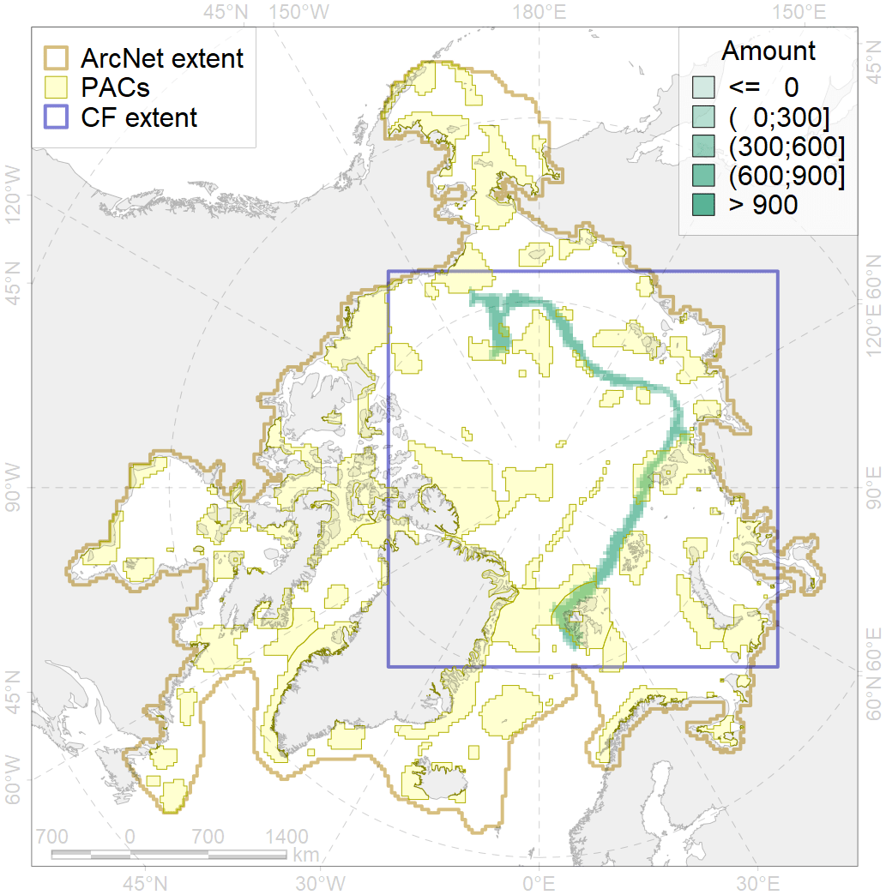
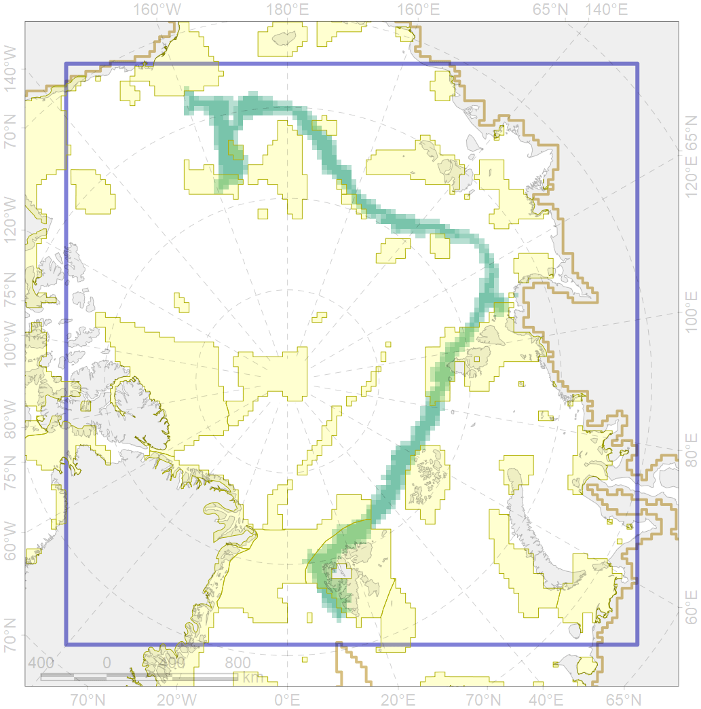

4090

| CF ID | 4090 |
| CF Name | Fish zoogeography, Arctic Region, Subarctic Transitional-Atlantic Province, Euro-Asian Bathyal District |
| Time Period | 2019 |
| Source(s) | Chernova, produced for this project |
| Seasonality | January-December |
| Depth Horizon | |
| Methodology | expert opinion based on summarised data of trawl surveys and multiple publications |
| Author Name | N. Chernova |
| Notes | |
| Conservation Target Set in the Scenario | 0.1594849 |
| Conservation Target Achieved in the Scenario | 0.286 (Scenario: 179.6%) |
| PAC ID | Proportion in the PAC | Contribution to ArcNet Target Achievement | PAC’s Contribution to the Achieved Target |
|---|---|---|---|
| 14 | 9.4% | 43.3% | 24.1% |
| 22 | 0.2% | 1.2% | 0.7% |
| 29 | 0.9% | 4.7% | 2.6% |
| 30 | 14.0% | 85.5% | 47.6% |
| 56 | 0.4% | 1.7% | 0.9% |
| 57 | 4.4% | 22.8% | 12.7% |
| 60 | 0.0% | 0.1% | 0.0% |
| 83 | 0.1% | 0.1% | 0.1% |
| inner | 29.4% | 159.4% | 88.7% |
| outer | 70.6% | 20.3% | 11.3% |